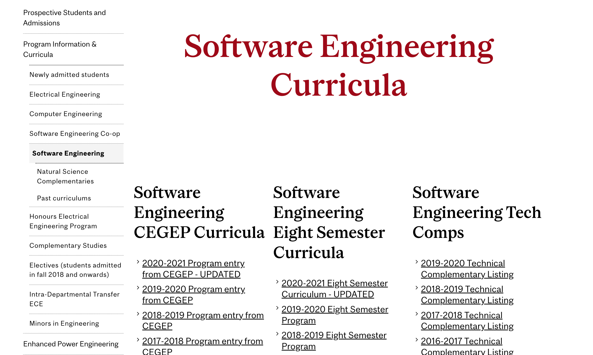
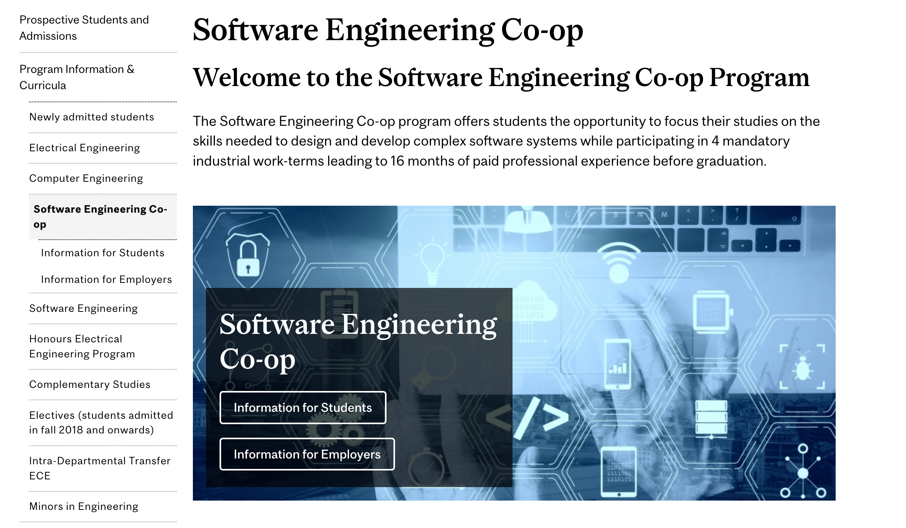
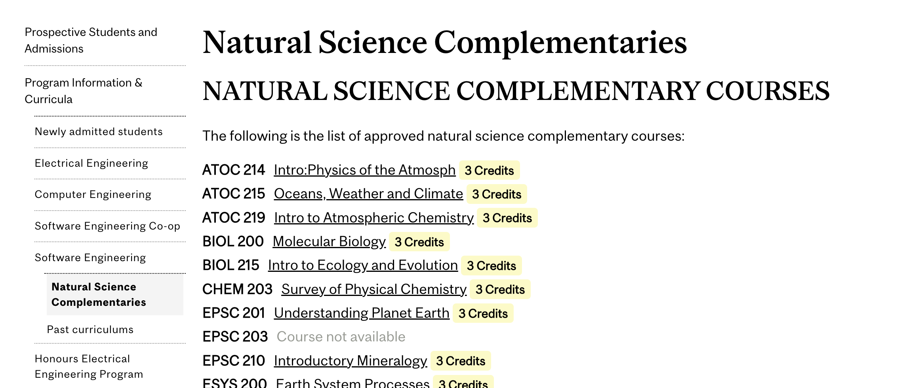
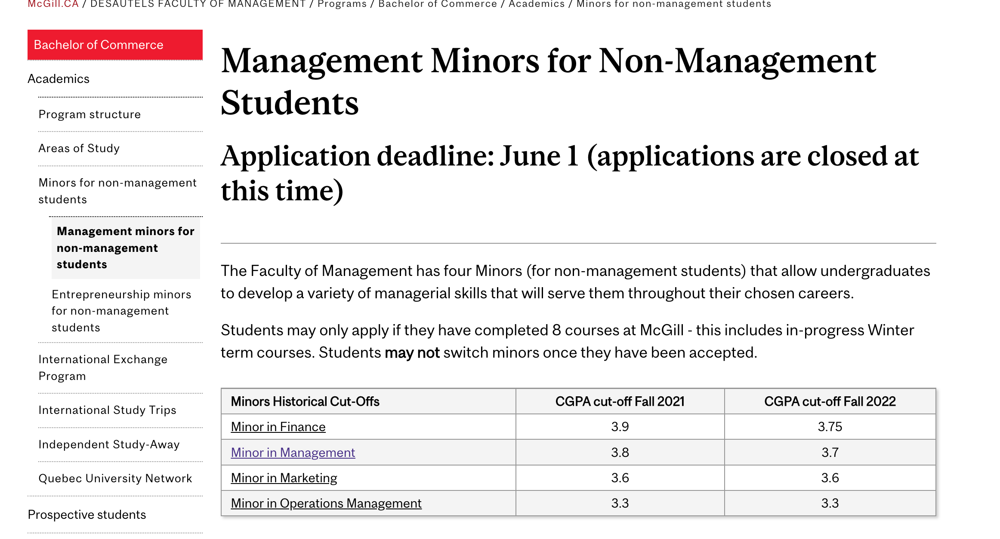

Our observations were taken through observing people in the academic advising offices. These included both
students and advisors. Some of us had family that were looking to apply for universities, which we
incorporated for prospective students.
Prospective Students
- Want to know what courses they will have to take to complete the degree
- They use the curriculum to compare with other schools
- Some students (in ECE) will look at different programs within McGill (software coop, comp eng or
electrical eng) to compare if they haven't yet decided on a program
- Will search the database to see which courses will be eligible for transfer credits
- Are frustrated with the distribution of information
Current Students
- Need to check if they have completed the correct courses
- Are currently using MS Excel, Notion or pen and paper to track if they have done the proper courses
- Students in minors have to navigate to different parts of the website to see the requirements for
the minor (can waste time searching for the correct page)
- Some students will make mistakes (missing pre-req or forget to take a class) which will impact their
graduation timeline
- May make errors due to looking at the wrong curriculum (one for a different entering year)
- Are not kept up to date on additional technical complementary courses that are recognized
Academic Advisors/Undergraduate Affairs Staff
- Often hold meetings with students simply to repeat info that is on the website
- Forget to update students on newly accepted credited courses
- Update info on the website about the requirements for each program
Many McGill Undergraduate students have lots of questions about their degree program, ranging from whether
they are taking the right courses toward graduation to obtaining a minor. A lot of the information is
available on the McGill website however it is scattered across department-, faculty-, and university-level
websites. Students and academic advisors need a better way of sharing and finding this information.
Screenshots from the McGill website showing what software engineering students see regarding their
curriculae:




Jacob (Prospective Student)
Basic Information:
- 17 years old
- Male
- Just graduated from high school
- From Vancouver, BC
Goals:
- Wants to study computer engineering
- Wants to work in the aerospace industry
- Would like to be a manager one day
Frustrations:
- Doesn't know what his options are for minors (particularly in management)
Anna (Current Student)
Basic Information:
- 22 years old
- Female
- In her third year at McGill
- From Montreal, QC
- Majoring in software engineering, no minors
Goals:
- Looking to finish her degree next May (2024)
- Wants to ensure she has done the correct course work
- Would like to move to NYC to work in fintech
Frustrations:
- Has already has to take discrete math for a second time despite having done it in CEGEP because she
was not updated on it's status
John (Academic Advisor)
Basic Information:
- 33 years old
- Male
- Graduated with a degree in Management from McGill in 2008
- From Montreal, QC
- Is a general academic advisor
- Married and has two young children
Goals:
- Support his family
- Buy a new house within the next 5 years
- Perform well at work and get a raise
Frustrations:
- So many students come to him for small questions that they could probably find themselves
- It's embarrassing when sometimes he can't answer the questions students come to him for, and when
the students seem to know more than he does
The Proposed System:
An interactive web platform that can help students in the department of ECSE better navigate the information
they need. Students looking to assess their progress towards obtaining their degree (ensuring they have
taken the right courses and enough credits) or simply looking for additional information regarding their
options for complementary courses will be interacting with the web platform.
Actor: Anna (Persona 2)
Intention:
Anna is planning to graduate next year but has started to become anxious over whether she has taken all the
required courses. Having already made plans for what to do after graduating, she desperately does not want
to have some missing or incorrect courses throwing everything into disarray with another semester. A search
online has revealed the McGill Course Tracker website, which should allow her to input all her data and keep
track of everything. Anna hopes that this will help her review all her courses and better plan her schedules
in the coming semesters.
Main Scenario:
-
Anna opens the link to the home page and clicks the “Create an Account” button to start using the
platform.
-
Anna signs in with her email and creates a password.
-
On the next page, Anna selects her major, her year, starting year, expected graduation date, and
leaves the minor option blank.
-
After her profile and details have been set, Anna confirms them and moves on to the next page, where
she enters all the courses she has taken so far, their semester, and her grade for the ones that
have been completed.
-
Upon confirming all these changes, the page shows her per-semester and cumulative GPA, total credits
completed, a list of courses that need to be retaken, and remaining required courses and credits.
-
Anna clicks on her profile icon and selects the “Sign Out” option to exit the page, feeling
significantly more settled knowing that she is on the right track.
Comparison of Products
MyDegree by
WLU
MyDegree is an interactive web-platform that allows students to track the courses they’ve taken against
their program requirements. The platform determines how selected future courses will be used towards
completing their degree requirements. It explores how the completed and future coursework could be applied
towards another program at the university. It is not a registration tool.
Degree Procress by York
The Degree Progress Report is a generated pdf that checks the requirements that are needed towards
graduation in a degree program. Based on this automated review, it shows what requirements have already been
completed, what requirements still need to be completed and what is currently in progress.
Why is our platform better?
The existing platforms are specific to each university. There is nothing out there at the moment that
satisfies the needs of the current student population at McGill in ECSE. Our platform would allow for
significant improvement on the current process for students to acquire important information regarding
curriculums and available courses in addition to being able to track their degree progress. Students will be
able to stay up to date with changes made to course delivery and curriculums over the years. Our platform
will have the flexibility of being interactive so it will not simply be a webpage with information. Each
student will be able to update their profile as they complete courses and degree requirements. Finally, the
platform will also have a public element to it, allowing students interested in attending McGill to have a
deeper understanding of the curriculum, course offerings and degree options (minors + complementary courses)
which will be very valuable to them.
|
Interactive |
Track Courses |
Programs Comparison |
| McGill |
X |
X |
X |
| WLU |
X |
X |
X |
York |
|
X |
|